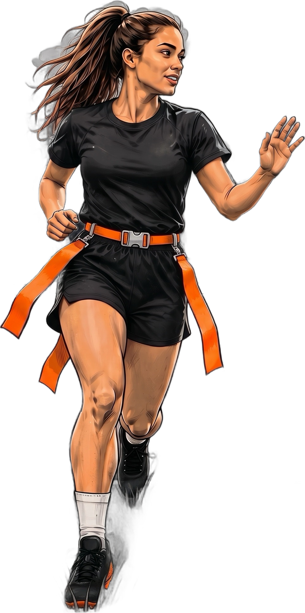
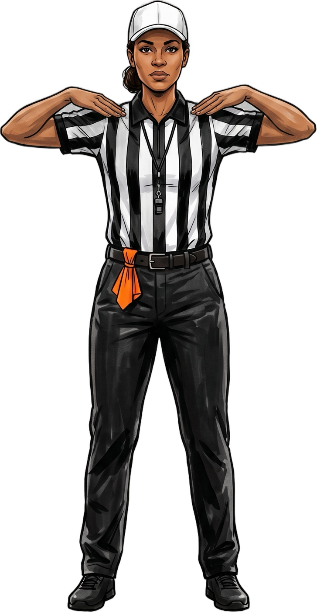
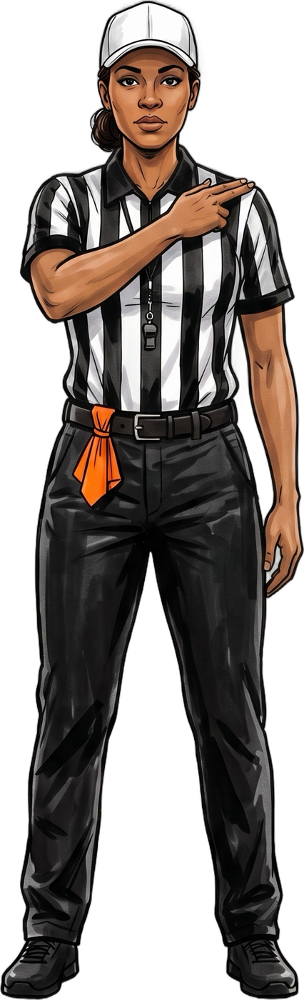
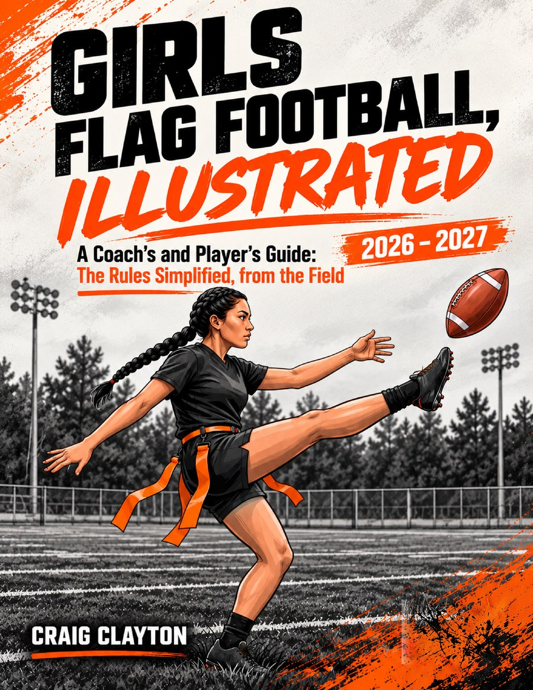

Under NFHS flag football rules, a team can punt from behind the neutral zone, as long as it declares the punt before the ball is ready for play. Once it's declared, the team has to kick. Field goals are a different story: they're allowed only in states that adopt them.
If your players came from tackle football, punting feels normal. If they came from a recreation or youth flag league, it might be brand new, because many of those leagues don't kick at all. High school girls flag football under NFHS rules does. Here's how it works, step by step.
Declare it first
A punt is never a surprise in this game. The kicking team has to tell the referee it's going to kick before the ball is ready for play. Rule 6-1-1
- 1Once the punt is declared, the receiving team gets time to substitute, so it can bring in its returners.
- 2A declared punt has to be kicked. No fake punts.
- 3The kicking team can change its mind only after a charged time-out, an official's time-out, the end of a period, or a penalty enforcement.
- 4The receiving team can't punt at all.
Five seconds to kick
The punter has 5 seconds after the snap to get the kick away. Holding the ball longer than that is delay of game. Rule 3-6-2
Everyone on the kicking team except the kicker has to be set and still when the ball is kicked. Anyone moving is a false start. Rule 7-1-9
What happens to the ball
This is where flag football is different from tackle. Follow the ball:
- 1The receiving team catches it: it can run it back. 6-1-2
- 2It lands untouched: still live. A receiver can pick it up and return it.
- 3Anyone touches it, then it hits the ground: dead. The receiving team's ball at that spot. 6-1-5
- 4The kicking team catches it: dead right there. It can't advance. 6-1-3
- 5It goes out of bounds: the receiving team's ball at the inbounds spot. 6-1-9

An untouched punt that hits the ground is still live, so the receiving team can pick it up and return it. Once anyone touches it and it hits the ground, though, it's dead.
Touchbacks and first touching
A punt that breaks the plane of the receiving team's goal line is a touchback. The receiving team starts on its own 14-yard line. 8-5-3 · 8-5-4
If a kicking-team player touches the punt first beyond the expanded neutral zone, that's first touching. It isn't a foul. The receiving team simply gets to choose: take the ball at that spot, or take the result of the play. 6-1-7

First touching
Fingertips on top of both shoulders. The receiving team gets an option.
Give the receiver room
While the punt is in the air beyond the neutral zone, the kicking team can't touch the receiver or block her path to the ball. That's kick-catch interference, and it's 10 yards, with the receiving team choosing from three options. 6-3
And a kick that breaks the rules, like one that was never declared, is an illegal kick:

Illegal kick
Hand taps the opposite shoulder, then points at the toe.
What about field goals?
Place kicks and field goals are allowed only if your state association adopts them. Where they are, a field goal is worth 3 points, and a kick from the 3-yard line on a try is worth 1. 8-4-1 · 8-3-3 Goal posts are optional too, so check your field before you practice it.

Every punt rule, illustrated.
Rule 6 in Girls Flag Football, Illustrated has a field diagram of a declared punt, every way the ball can end up, and the referee signal for each one.
Rule references are to the 2026–27 NFHS Flag Football Rules, written here in plain words. Not affiliated with or endorsed by the NFHS. Always check your state association's adoptions.